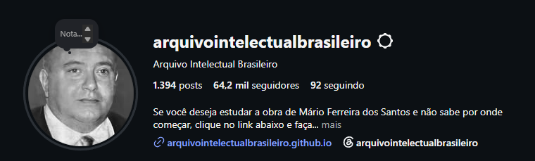
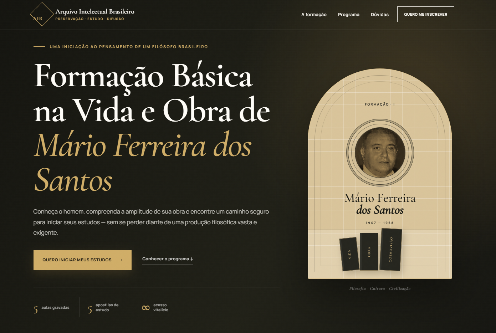
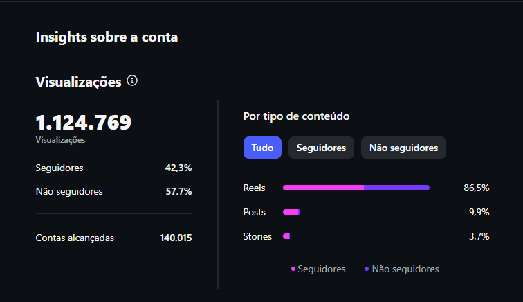
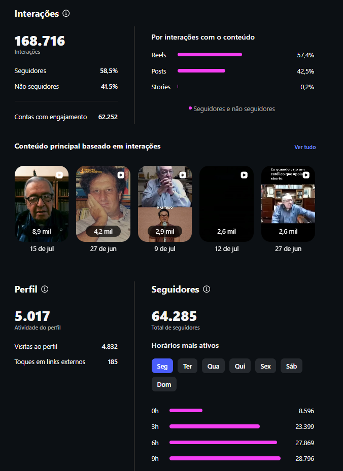
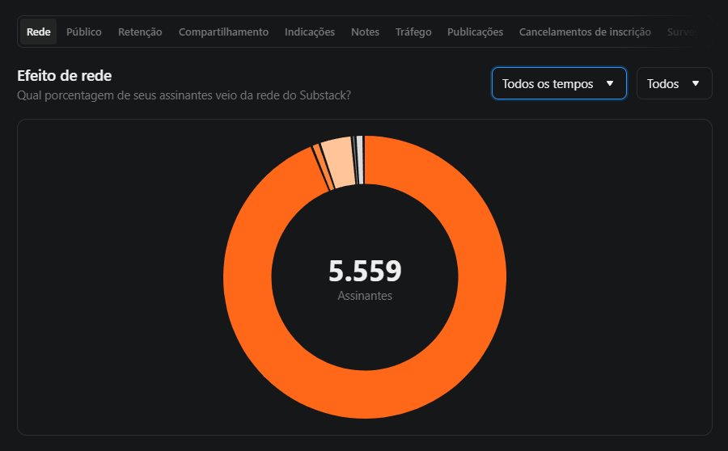
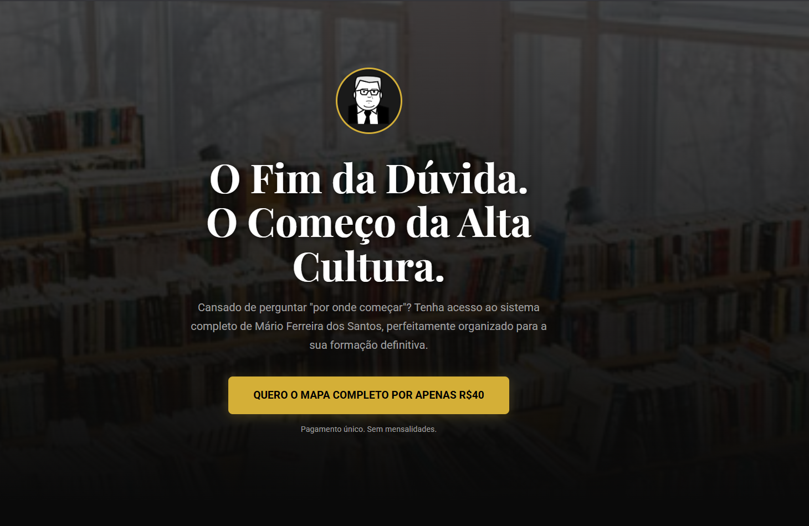
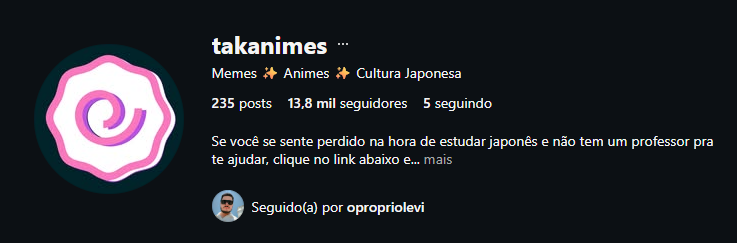
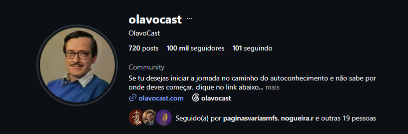

Um projeto cultural, uma marca para público jovem e uma orientação estratégica.
PORTFÓLIO PROFISSIONAL · 2026
Primeiro no Brasil a restaurar a obra gravada de Mário Ferreira dos Santos
Conteúdo que vira audiência.
Projetos que viram resultado.
Sou Levi Ferreira. Transformei um trabalho pioneiro de preservação cultural em um ecossistema de conteúdo, audiência, newsletter, produtos e páginas próprias — executando cada etapa.
Vamos conversar
Trabalho com autonomia.
Colaboro bem em equipe.
TRABALHO REALRESULTADOS VERIFICÁVEIS



0,0 milseguidores no projeto principal
+0de alcance mensal
0assinantes na newsletter
+0áudios históricos restaurados
01 — O QUE JÁ ENTREGUEI
Menos promessa. Mais trabalho publicado.
Conteúdos com 4,2 e 2,9 milhões de visualizações na Takanimes.
Oferta, copy, página, organização do produto e publicação.
Newsletter construída e operada no Substack, sem equipe.
02 — PRESERVAÇÃO CULTURAL
1º
Primeiro no Brasil a restaurar a obra gravada de Mário Ferreira dos Santos.
Localizei, tratei e organizei mais de 150 registros históricos, tornando inteligível e acessível um material que circulava com ruído, baixa qualidade e pouca organização.
Explorar o acervo restaurado03 — ANTES × DEPOIS
Não precisa acreditar na descrição. Ouça o resultado.
Três amostras reais do processo de restauração. Para perceber melhor a redução de ruído e o ganho de inteligibilidade, use fones de ouvido e compare o mesmo trecho em cada versão.
01 · FILOSOFIA
Mário Ferreira dos Santos
“Filósofos Portugueses”
ANTESGravação original
Abrir original DEPOISVersão restaurada
Abrir restaurado 02 · POESIA
Bruno Tolentino
“A gênese do enigma”
ANTESGravação original
Abrir original DEPOISVersão restaurada
Abrir restaurado 03 · TEOLOGIA & CULTURA
Gustavo Corção
“As aflições dos homens e as consolações de Deus”
ANTESFonte original
Abrir fonte original DEPOISVersão restaurada
Abrir restaurado Audiência0
seguidores no Instagram
Distribuição+0
de alcance mensal
Engajamento0
interações registradas
Canal próprio0
assinantes na newsletter



CURADORIARESTAURAÇÃOCONTEÚDONEWSLETTERPÁGINAS DE VENDA
PROVA DE TRABALHOAbra o acervo restaurado e confira diretamente parte do resultado deste trabalho.
05 — OUTROS PROJETOS
Adapto a linguagem sem perder a estratégia.
Os projetos abaixo atendem públicos diferentes. O princípio é o mesmo: entender a audiência, comunicar com clareza e construir consistência.
COFUNDADOR E GESTOR

02
Takanimes
Projeto produzido para um público jovem interessado em animes, memes e cultura japonesa. Aqui, minha atuação demonstra flexibilidade de linguagem, leitura de tendências e capacidade de criar conteúdo de alto alcance sem misturar essa identidade com a comunicação institucional dos demais projetos.
0,0 mil seguidores0,0 mi em um único vídeo0,0 mi em outro conteúdo
Ver perfil ORIENTAÇÃO ESTRATÉGICA

03
OlavoCast
Atuei ativamente na orientação estratégica do projeto. A participação é apresentada pelo que de fato foi realizado: direcionamento e visão de crescimento, sem atribuir a mim a produção dos vídeos publicados pelo perfil.
0 mil seguidores atuaisEstratégia como contribuição
Ver perfil 06 — CONTEÚDO EM MOVIMENTO
Vídeos publicados. Alcance comprovado.
Três exemplos de execução para públicos distintos. Os conteúdos da Takanimes são identificados como comunicação jovem para preservar o contexto de cada trabalho.
Conteúdo cultural
Arquivo Intelectual Brasileiro
Assistir ao vídeo no Instagram
Público jovem
Takanimes
Assistir ao vídeo no Instagram
Público jovem
Takanimes
Assistir ao vídeo no Instagram
07 — COMPETÊNCIAS COM PROVA
O que sei fazer — e onde já provei.
Cada competência abaixo está ligada a uma entrega visível neste portfólio.
Conteúdo & crescimento
Estratégia editorial, pesquisa, copy direta, carrosséis, stories, Reels, leitura de métricas e adaptação de linguagem.
PROVA64,2 mil seguidores e vídeos com milhões de views
Web & produtos digitais
Landing pages, páginas de vendas, blogs, HTML, CSS, JavaScript, estrutura de ofertas e publicação de produtos digitais.
PROVADuas páginas públicas mostradas acima
Preservação digital
Restauração básica de áudios antigos, tratamento de PDFs, renovação de livros digitalizados e organização de acervos de Mário Ferreira dos Santos, Bruno Tolentino, José Monir Nasser e Gustavo Corção.
PROVA+150 áudios e quatro acervos intelectuais
Newsletter & distribuição
Substack avançado, crescimento de base, planejamento editorial, publicação, automação e relacionamento com assinantes.
PROVA5.559 assinantes em canal próprio
Idiomas & comunicação
Inglês fluente, tradução e interpretação em tempo real. Conhecimentos em francês, espanhol e italiano.
APLICAÇÃOTradução de textos e interpretação em tempo real
Edição & design
Canva intermediário e Premiere Pro básico, com evolução contínua em edição de vídeo e produção visual.
APLICAÇÃOCarrosséis, stories, Reels e materiais de produto
08 — FERRAMENTAS & FORMAÇÃO
Aprendizado autônomo aplicado a projetos reais.
Ensino médio completo. Formação autodidata em marketing, idiomas e produção digital, com cursos de HTML, CSS e JavaScript pelo Curso em Vídeo.
- AvançadoSubstack
- Intermediário / avançadoHTML · CSS · JavaScript
- IntermediárioCanva
- BásicoPremiere Pro
- Prática aplicadaÁudio · PDF · OCR
09 — CONTATO
Tem um projeto, uma vaga ou um problema para resolver?